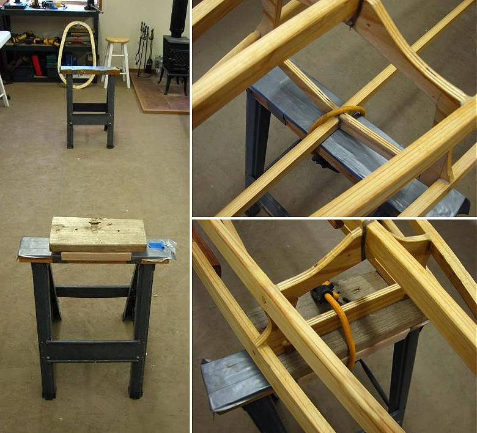

| PVC Skinning (Hull) | Menu Previous Page Next Page |
|

Turn the completed frame over and place on sawhorses. Since the Sea Bee forward deck is peaked, and the aft deck is flat, nail or screw small sections of 2 X 4/6 lumber to the aft sawhorse to level the frame for skinning. Insure that the 2 X 4's are narrower than the frame for skin clearance. This will vary depending on the kayak being skinned. Use shock cords or tape to secure the frame to the sawhorses.
|
|